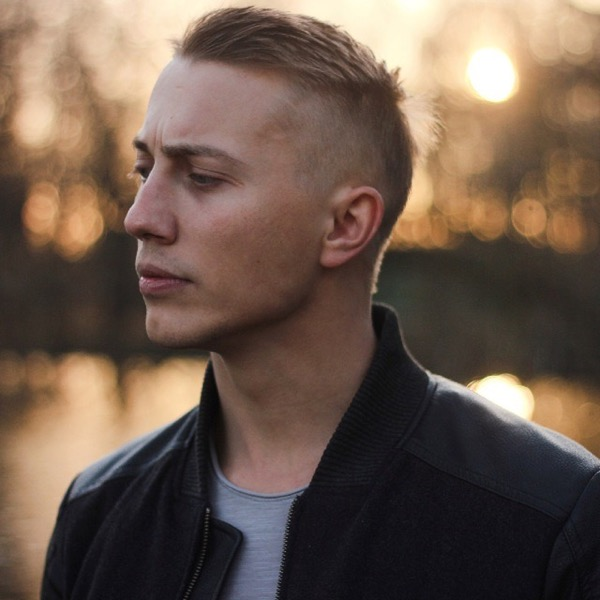

A · Lime note taped to the page
Why these productsPayments, a medication reminder, a storm radar, an art app. Different markets, one idea.
I design the everyday parts of life — money, health, weather — so they take less of your attention.
A · Lime note taped to the page
I design the everyday parts of life — money, health, weather — so they take less of your attention.
B · Big quote, each word carries a screen
I design the everyday parts of life — money, health
, weather
— so they take less of your attention.

Dzmitry KuzmiankouProduct designer, Poznań
C · Polaroid pinned to a ruled card
I design the everyday parts of life — money, health, weather — so they take less of your attention.
Dzmitry Kuzmiankou · product designer